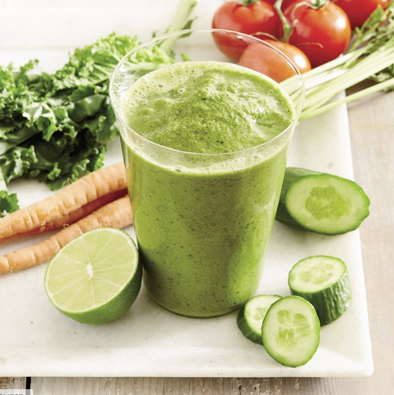
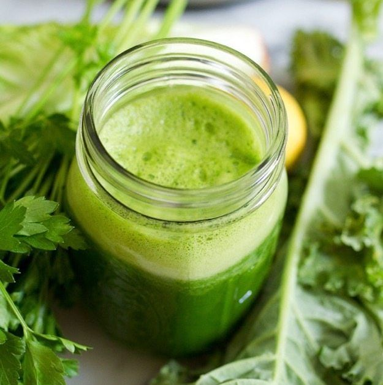
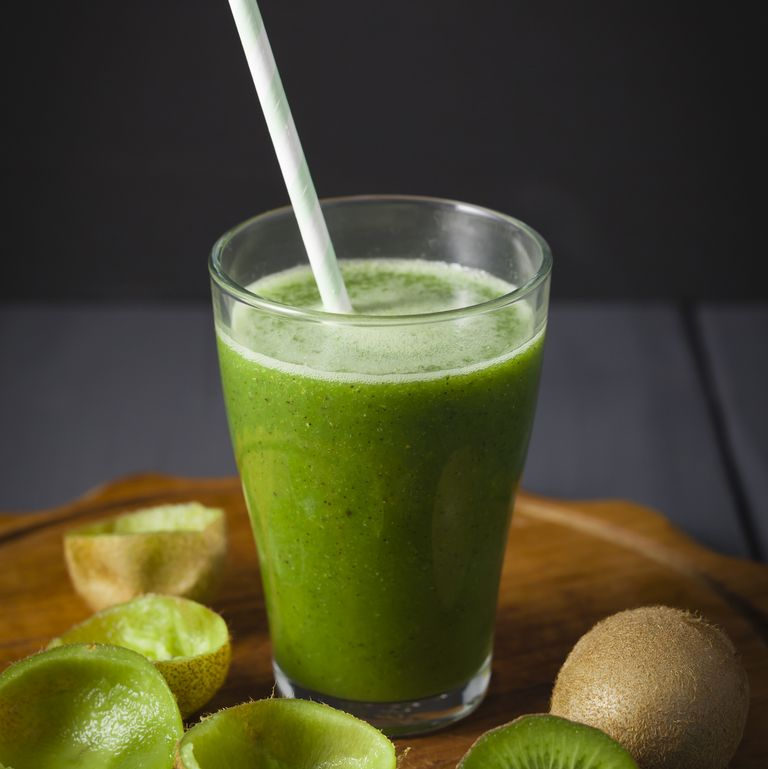
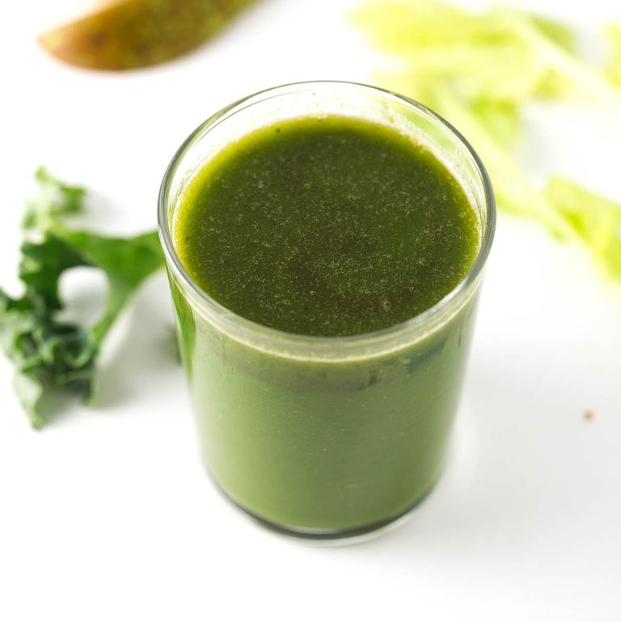
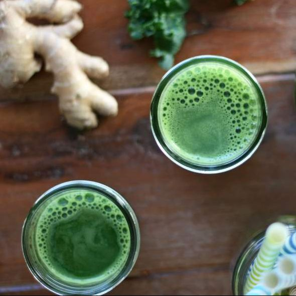
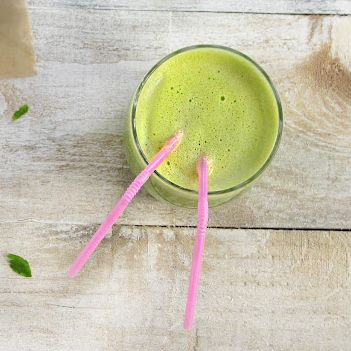
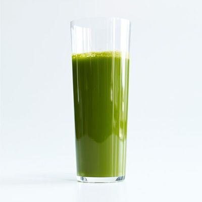
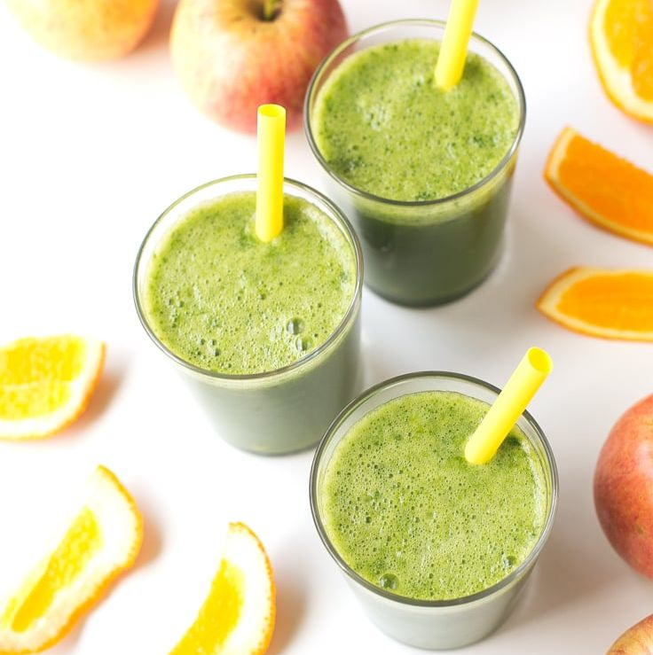

Kale a little too intense for you? Sugiuchi also loves spinach, which contains many of the same
nutrients
but is “a little milder,” she notes. Spinach is a perfect base for this fruit-forward juice, which is
great for beginners who want to try juicing, but don’t love the taste of veggies..
Gazpacho Smoothie

In this leafy greens-packed recipe, powerful nutrients taste delicious. Kale is chock-full of vitamins
A, C, K, and B6, plus calcium and manganese. And you won’t even notice that you’re drinking it, thanks
to a bright combination of lemon, apple, and parsley.
Green Juice

Technically a smoothie, this plant-powered blend has a lighter consistency if you want something a
little more filling than your typical juice. Greek yogurt adds some quality protein, while celery, lime,
kale, and cucumbers give it that vibrant green hue.
Green Cleanse Smoothie

You’ll use a blender instead of a juicer for this recipe, but the result is much closer to the
consistency of a juice than a thicker smoothie. It’s packed with vitamin C, thanks to spinach and kiwi.
Plus, a bit of coconut water adds sweetness to the final product.
Digestive Aid Green Juice

We all feel bloated every once in a while. This vegan juice is the perfect antidote, packed with
anti-inflammatory ingredients like ginger and fennel. “One of my favorite tricks in green smoothies and
juices is adding a little bit of fresh ginger root,”
Zingy Ginger Green Juice

For another ginger-forward recipe that’s great for digestion, try this five-ingredient juice that goes
all-in on the root. You’ll drink an entire head of fresh kale—along with its vitamins, minerals, and
those Sugiuchi-approved phytonutrients—without even realizing it.
Zingy Ginger Green Juice

We all need a break from leafy greens every once in a while. That’s where this celery-apple juice comes
in—it’s sweet, light, and incredibly refreshing. With cucumber and ginger for flavor, it’s practically
begging to be enjoyed on a warm, sunny morning.
Cilantro-Celery Juice Punch

This recipe is only for the cilantro lovers of the world—it gets most of its color from an entire bunch
of the greens. The love-it-or-hate-it herb is rich in antioxidants, making it a great juice base. And
don’t worry: The cilantro is tempered with apple, ginger
Four-Ingredient Fall Juice

Kale, spinach, and romaine aren’t the only greens you can use for your juice. Why not try Swiss chard?
This easy juice (which works any time of year) balances out the bitterness of chard and celery with the
natural sweetness of apples and oranges.